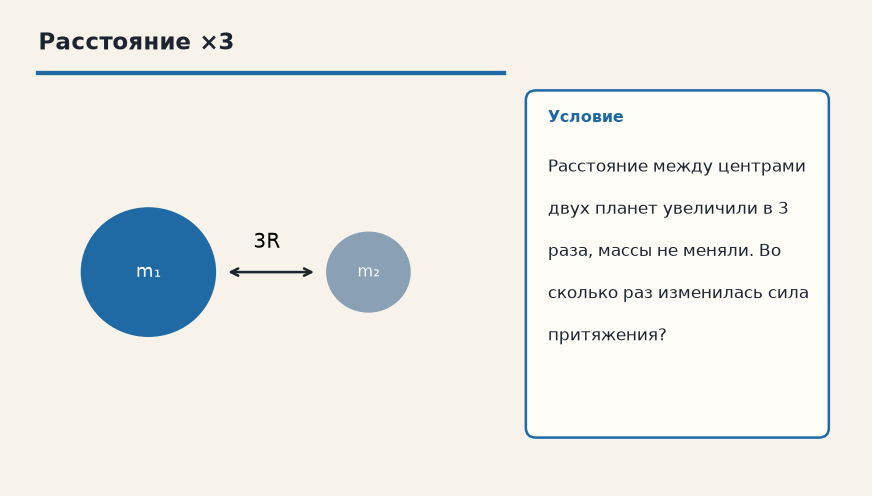
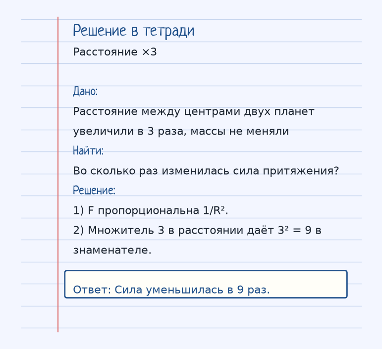
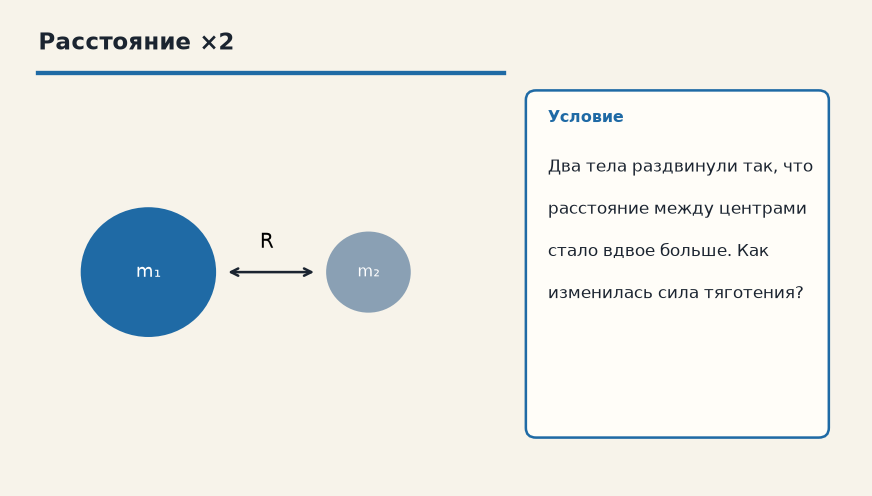
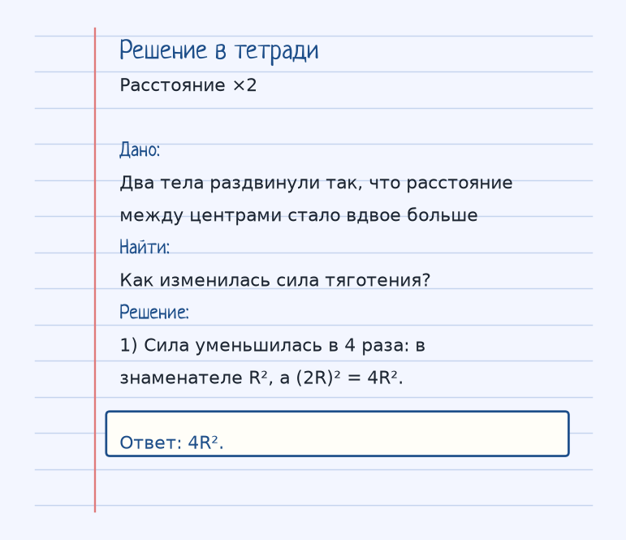

Тема «Закон всемирного тяготения»: физический смысл, единицы величин, типичные ошибки и два разобранных примера.

Схема к условию.
Физический смысл
Все тела притягиваются друг к другу. Сила падает обратно пропорционально квадрату расстояния между ними.
Закон всемирного тяготения говорит, что любые два тела с массами притягиваются. Сила F = G·(m₁·m₂)/R². G = 6,67·10⁻¹¹ Н·м²/кг² — очень маленькая постоянная, поэтому притяжение двух людей незаметно, а притяжение планеты уже держит нас на поверхности.
R — расстояние между центрами, не «зазор между поверхностями». Для человека и Земли это примерно радиус Земли, если человек стоит на поверхности.
Квадрат в знаменателе решает всё: расстояние увеличили в 3 раза — сила упала в 9 раз. Увеличили в 2 раза — сила стала в 4 раза меньше. Массы входят произведением: удвоили одну массу — сила удвоилась.
Формула и единицы
F = G · (m₁ · m₂) / R²
G = 6.67 · 10⁻¹¹ (Н·м²/кг²) — гравитационная постоянная.
G = 6,67·10⁻¹¹ Н·м²/кг². m₁ и m₂ — массы (кг), R — расстояние между центрами (м).
Пояснение
Если расстояние между двумя планетами увеличить в 3 раза, сила притяжения уменьшится в 9 раз (3²). Это работает и для тебя с Землей.
Раздвинь две планеты в 3 раза дальше — притяжение ослабнет в 9 раз, потому что 3² = 9. То же правило связывает и тебя с Землёй.
Типичные ошибки
R — между центрами. И не забудь квадрат: «в 3 раза дальше» — это не «сила в 3 раза меньше».
Разобранные примеры. Решение каждого открывается отдельно.
Разбор 1
Расстояние ×3
Расстояние между центрами двух планет увеличили в 3 раза, массы не меняли. Во сколько раз изменилась сила притяжения?
На схеме только условие.
Порядок записи: данные, единицы СИ, искомая величина, ход решения, ответ.
Дано. Расстояние между центрами двух планет увеличили в 3 раза, массы не меняли
В СИ.
Найти. Во сколько раз изменилась сила притяжения?
Решение.
F пропорциональна 1/R².
Множитель 3 в расстоянии даёт 3² = 9 в знаменателе.
Сила уменьшилась в 9 раз.

Разбор 2
Расстояние ×2
Два тела раздвинули так, что расстояние между центрами стало вдвое больше. Как изменилась сила тяготения?

На схеме только условие.
Порядок записи: данные, единицы СИ, искомая величина, ход решения, ответ.
Дано. Два тела раздвинули так, что расстояние между центрами стало вдвое больше
В СИ.
Найти. Как изменилась сила тяготения?
Решение.
Сила уменьшилась в 4 раза: в знаменателе R², а (2R)² = 4R².
4R².

Разбор 3
Расстояние в 4 раза
Расстояние между центрами двух тел увеличили в 4 раза, массы не меняли. Во сколько раз изменилась сила тяготения?
На схеме только условие.
Порядок записи: данные, единицы СИ, искомая величина, ход решения, ответ.
Дано. R₂ = 4 R₁, массы те же
В СИ.
В законе R в квадрате.
Найти. Отношение сил
Решение.
F ~ 1/R².
4² = 16, сила уменьшилась в 16 раз.
Уменьшилась в 16 раз.
Разбор 4
Одна масса удвоена
Одну из масс увеличили в 2 раза, расстояние то же. Как изменилась сила?
На схеме только условие.
Порядок записи: данные, единицы СИ, искомая величина, ход решения, ответ.
Дано. m₁ стала 2 m₁
В СИ.
Массы входят произведением.
Найти. Отношение сил
Решение.
F пропорциональна произведению масс.
Сила выросла в 2 раза.
Выросла в 2 раза.
Разбор 5
Постоянная
Каков порядок гравитационной постоянной и в каких единицах её подставляют?
На схеме только условие.
Порядок записи: данные, единицы СИ, искомая величина, ход решения, ответ.
Дано. G = 6,67·10⁻¹¹
В СИ.
Единица Н·м²/кг².
Найти. G
Решение.
В СИ G = 6,67·10⁻¹¹ Н·м²/кг².
Массы в кг, расстояние в метрах.
6,67·10⁻¹¹ Н·м²/кг².
Разбор 6
Центры
Два шара почти соприкасаются. Какое расстояние подставлять в закон тяготения?
На схеме только условие.
Порядок записи: данные, единицы СИ, искомая величина, ход решения, ответ.
Дано. Шары имеют радиусы
В СИ.
Сила записана через расстояние между центрами.
Найти. R
Решение.
R — расстояние между центрами, не зазор между поверхностями.
Расстояние между центрами.
Разбор 7
Обе массы вдвое
Каждую массу увеличили в 2 раза и расстояние увеличили в 2 раза. Как изменилась сила?
На схеме только условие.
Порядок записи: данные, единицы СИ, искомая величина, ход решения, ответ.